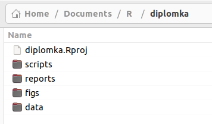
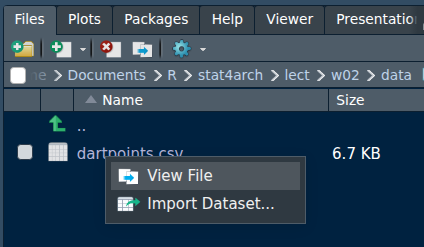
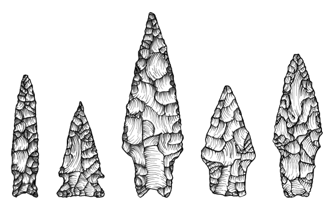

my_object <- aggregate(grave_length ~ dating, data = df_grave, FUN = mean)Basic workflows
Today, you will learn how to:
- do basic worklow by
- organising your work with script and project
- using additional packages
- importing your data
- observing the structure of your data
- describe your data
- visually (plots)
- numericaly (Descriptive statistics)
- observe the relations between 2 variables
Warm up!
- explain what does this image want to say:

- what does this mark do? -
<-
- and this? -
$
- can you explain what’s going on here?
Introduction
- the general workflow of data analysis looks like this:

Organize your work in scripts
create a new script with Ctrl + Shift + n
put some basic info on what are you doing at the top.
use
#to comment your codecomment on the why, not the what.
divide the code into sections with Ctrl + Shift + r
# Section name ----arrange your codes in the order in which you will run them (so packages first, then importing data, then transformations, analyses, … and finally exporting of the results)
RStudio will give you hints, hit Tab to autocomplete function calls.
execute the current line with Ctrl + Enter
run the whole script with Ctrl + Shift + Enter
Script example:
# Practice script for "AES_707: Statistics seminar for archaeology students"
# Author: Peter Tkáč
# Date: 2025-10-03
# Update: 2025-10-05
# Packages ----------------------------
library(here)
library(dplyr)
library(ggplot2)
# Data Import --------------------------
df_dartpoints <- read.csv(here("data/dartpoints.csv"))
# Structure overview -----------------
# for quick overview of the data structure
str(df_dartpoints)
nrow(df_dartpoints) # number of dartpoints / rows
table(df_dartpoints$Name) # number of types of the dartpoints
# Transformation ---------------------------------
sum_dartpoints <- df_dartpoints %>%
group_by(Name) %>%
summarise(
mean_length = mean(Length),
sd_length = sd(Length),
mean_width = mean(Width),
sd_width = sd(Width)
)
sum_dartpoints
# Data Visualisation ---------------------
# for a quick overview of the distribution of the variable Length
plot_1 <- ggplot(df_dartpoints, aes(x=Length))+
geom_histogram()+
theme_light()
plot_1
# Results saving -------------------------------
ggsave(plot_1, filename = "very_important_plot.png")Projects
.Rprojfile is a kind of a “storage” for all your project related scripts, datasets, figures…- we recomend you to store each project in a separate directory (folder) and different parts of your project into subdirectories
- this organisation of scripts and data will be used throughout the whole course

Packages
- by installing additional packages, you can expand the amount of things you can do in R
- there are plenty of packages with different functions and aims
- we will introduce basic principles with package
here
#install.packages("here") # installs the package
library(here) # loads the package
here() # runs a function from the package[1] "C:/Users/pajdla/Documents/projects/stat4arch"- you only need to install the package once by
install.packages("name_of_the_package"), but it needs to be loaded every time you start a new script or after you have cleaned up your workspace bylibrary(name_of_the_package)
Importing data into R
Paths
Absolute file path - The file path is specific to a given user.
C:/Documents/MyProject/data/dartpoints.csv
Relative file path starts with the folder where your project is stored:
./data/dartpoints.csv
Package here
- Package
hereis here to save the day! - Function
here()will know where the top directory is, so you do not need to write whole URL adress
Try running here() to see where your project is stored
here()[1] "C:/Users/pajdla/Documents/projects/stat4arch"Importing Data into R - 2
- example of importing data with a relative path:
- NOTE that in this case, your data have to be in the subfolder “data” which is located in the same folder as your project
df_dartpoints <- read.csv(here("data/dartpoints.csv"))- function
read.csv()imports .csv files (AKA comma-separated values file) into your R (comma = čárka) - if your data use different way of separating values, you will have to adjust. For example, in the case of semicolom - ; (středník), you need to use argument
sep=";"
df_dartpoints <- read.csv(here("data/dartpoints.csv"), sep = ";")- you can check how the values are separated when you open your .csv file in Notepad (Poznámkový blok / Textový editor) or by function View File in the RStudio

Before we continue - the Dartpoints ddata
- download the data
dartpoints.csv - find out how the values in the file are separated and proceed accordingly
- create a new project and copy paste the dartpoints.csv into “data” subfolder
- create a new script and save it into “scripts” subfolder
- install and load package
here() - import data
dartpoints.csvand save them as a “df_dartpoints”

Structure of your data
- we already know function
str()which reveals the basic structure of any object
str(df_dartpoints)'data.frame': 91 obs. of 17 variables:
$ Name : chr "Darl" "Darl" "Darl" "Darl" ...
$ Catalog : chr "41-0322" "35-2946" "35-2921" "36-3487" ...
$ TARL : chr "41CV0536" "41CV0235" "41CV0132" "41CV0594" ...
$ Quad : chr "26/59" "21/63" "20/63" "10/54" ...
$ Length : num 42.8 40.5 37.5 40.3 30.6 41.8 40.3 48.5 47.7 33.6 ...
$ Width : num 15.8 17.4 16.3 16.1 17.1 16.8 20.7 18.7 17.5 15.8 ...
$ Thickness: num 5.8 5.8 6.1 6.3 4 4.1 5.9 6.9 7.2 5.1 ...
$ B.Width : num 11.3 NA 12.1 13.5 12.6 12.7 11.7 14.7 14.3 NA ...
$ J.Width : num 10.6 13.7 11.3 11.7 11.2 11.5 11.4 13.4 11.8 12.5 ...
$ H.Length : num 11.6 12.9 8.2 8.3 8.9 11 7.6 9.2 8.9 11.5 ...
$ Weight : num 3.6 4.5 3.6 4 2.3 3 3.9 6.2 5.1 2.8 ...
$ Blade.Sh : chr "S" "S" "S" "S" ...
$ Base.Sh : chr "I" "I" "I" "I" ...
$ Should.Sh: chr "S" "S" "S" "S" ...
$ Should.Or: chr "T" "T" "T" "T" ...
$ Haft.Sh : chr "S" "S" "S" "S" ...
$ Haft.Or : chr "E" "E" "E" "E" ...head(), tail()
head(df_dartpoints, 4) Name Catalog TARL Quad Length Width Thickness B.Width J.Width H.Length
1 Darl 41-0322 41CV0536 26/59 42.8 15.8 5.8 11.3 10.6 11.6
2 Darl 35-2946 41CV0235 21/63 40.5 17.4 5.8 NA 13.7 12.9
3 Darl 35-2921 41CV0132 20/63 37.5 16.3 6.1 12.1 11.3 8.2
4 Darl 36-3487 41CV0594 10/54 40.3 16.1 6.3 13.5 11.7 8.3
Weight Blade.Sh Base.Sh Should.Sh Should.Or Haft.Sh Haft.Or
1 3.6 S I S T S E
2 4.5 S I S T S E
3 3.6 S I S T S E
4 4.0 S I S T S Etail(df_dartpoints, 2) Name Catalog TARL Quad Length Width Thickness B.Width J.Width H.Length
90 Wells 35-3012 41CV0270 24/62 49.1 21.1 6.3 14.8 15.2 16.6
91 Wells 44-0732 41BL0239 39/55 63.1 24.7 5.4 10.3 12.1 21.1
Weight Blade.Sh Base.Sh Should.Sh Should.Or Haft.Sh Haft.Or
90 5.2 S E S T S P
91 16.3 S E S T S Tncol(), nrows()
ncol(df_dartpoints)[1] 17nrow(df_dartpoints)[1] 91names()
names(df_dartpoints) [1] "Name" "Catalog" "TARL" "Quad" "Length" "Width"
[7] "Thickness" "B.Width" "J.Width" "H.Length" "Weight" "Blade.Sh"
[13] "Base.Sh" "Should.Sh" "Should.Or" "Haft.Sh" "Haft.Or"